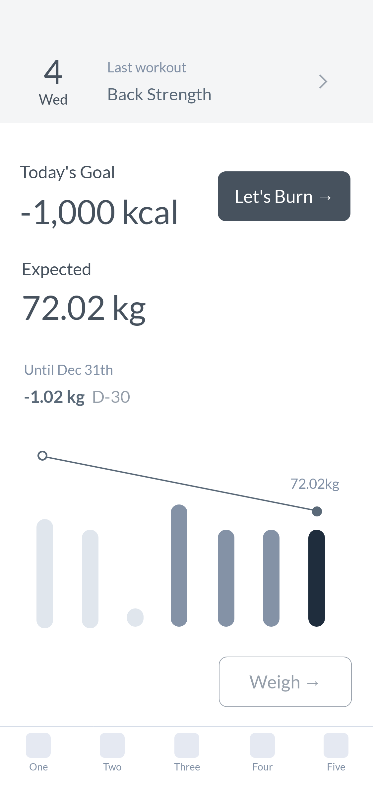
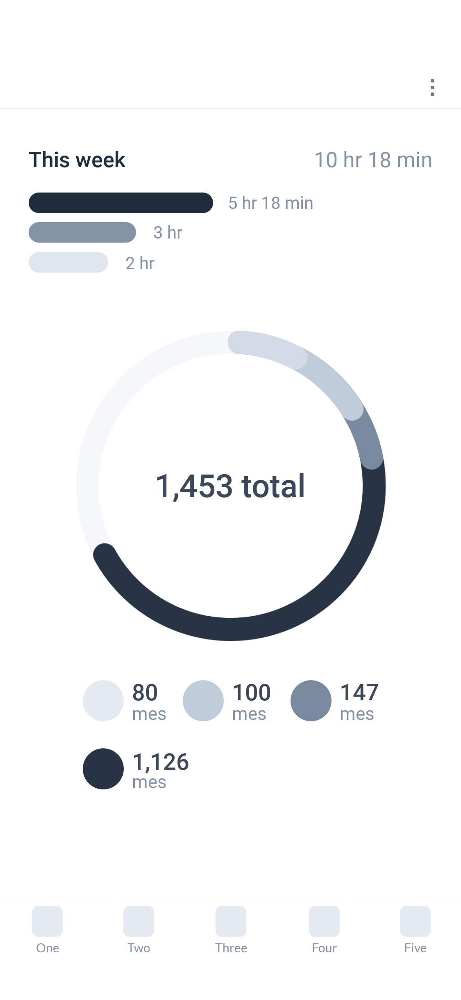

‘Dashboard’ 태스크는 사용자의 서비스 활용 상황을 지표 트래킹에 적합한 차트로 살펴볼 수 있는 단일 페이지로 구성된다. 지표 관리의 서비스의 주요 기능 여부에 따라 지표 관리, 인사이트 추출의 두가지 유형으로 구분된다.
활용 방법 →활용 현황을 살펴보고 액션을 취하는 것이 주된 과업인 경우, 본 페이지를 홈 화면에 배치하여 서비스 접속 시 지표를 탐색하고 관리 과업으로 연결될 수 있도록 한다. 관리 과업 연결을 위해 지표에 대한 가치 판단을 제공하고, 지표 관리를 위한 키 액션 버튼을 함께 제공하기도 한다.
지표 관리가 주된 과업이 아닌 경우 서브 메뉴로 배치하여 인사이트를 제공할 수 있도록 한다. 이러한 경우 일반적으로 서비스 내에서 트래킹하는 지표를 순차적으로 살펴볼 수 있도록 차트를 목록형으로 배치한다. 데이터를 비즈니스에 활용할 수 있는 서비스의 경우 사용자가 원하는 지표를 트래킹 할 수 있도록 차트 생성, 대시보드 홈 배치 등 사용자 커스텀 기능(interface customization)을 제공하여 대시보드 활용성을 높인다. 커스텀 기능을 제공하는 경우 서비스 접속 초기에는 사용자가 탐색하고자 하는 지표를 설정하지 않았으므로 기본 세팅한 공통 차트를 노출하여 활용을 유도한다.
